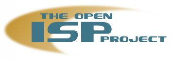

![[ Prev ]](../gx/navbar/prev.jpg)
![[ Table of Contents ]](../gx/navbar/toc.jpg)
![[ Front Page ]](../gx/navbar/frontpage.jpg)
![[ Talkback ]](../gx/navbar/talkback.jpg)
![[ FAQ ]](./../gx/navbar/faq.jpg)
![[ Next ]](../gx/navbar/next.jpg)

"Linux Gazette...making Linux just a little more fun!"
0800-LINUX: Creating a Free Linux-only ISP, Part II
It has been a very exciting month. Since the
previous article about this project in June's issue of Linux
Gazette, I have received over 40 replies, a virtual host to set up a web
page and mailing list, and an Invitation to
Global Linux 2000 in Seoul,
Korea! Thanks to all of you who wrote and have helped out with resources, ideas and enthusiasm.
I have learned a lot and have a more
clear vision of the actions to take in order to achieve our goals. Also new dangers have arisen,
or at least I have acknowledged, to the Linux community, so now I have a deep sense of urgency
and total commitment to the project. New services ideas are on the works and some companies are
starting to join.
From the e-mail I have received to the friends and contacts I made in Global Linux 2000,
I'm impressed to see how many people want this project to come true. THANK YOU!
News and Report from Korea
- Pascal Bleser, from ATOS, has offered to host
the project's home page at http://open-isp.linuxbe.org
He has also set up a mailing list to host further discussion on creating a Linux-only ISP.
To subscribe send a message to:
sympa@lists.linuxbe.org
with the message:
subscribe open-isp
The web page is the place to go for news related to the project, announcements, statistics about
dial-up growth in different countries, and core documents of the project. We are setting up a
web discussion forum, so you can leave your comments on the web site.
-
Jakob Borg, from Denmark, voluntarily created and submitted the
Open ISP Logo:

Original site:
http://open-isp.linuxbe.org/gfx/logo2.jpg
- Carlos (me) got married on June 10th. Now I'm inside The circle of the Ring.
Well, we didn't have time for honeymoon, as I flew to Korea the next day. Back from Seoul on
June 17th, with a killing case of jet-lag, wedding party all day long on 18th and then honeymoon for one week
in Barcelona, Spain, the next day. Very intense month. Believe me.
I was invited by the LinuxGreenhouse to join them at
Global Linux 2000, during June 14-17.
There, I had the opportunity to meet people from the FSF, Linux start-ups, hardware manufacturers,
Gnome Hackers, Gimp Artists, Korean Linux companies, well-known Linux distributors and integrators,
as well as Free Software personalities, to name just a few. There was a lot of excitement and
enthusiasm. I had meetings with several companies' representatives, presenting the project and
answering all their questions about how to profit by supporting the project.
For instance, it would be a great opportunity for Korean companies to expose their hardware solutions
to public view in European an American markets. There are lots of small and medium hardware integrators/manufacturers
who focus only on the Asian market, due to the high costs of setting up offices in Europe or North America, without
mentioning the huge costs of publicity and public relations they have to pay to compete in such
markets.
By supporting the Open ISP project with their hardware (it can also be another kind of contribution),
they would receive free publicity with the success of the project, becoming one of our Sponsors.
They are building all kinds of smart hardware solutions, with Linux of course, and investing in this project
would provide them an opportunity to demonstrate in with our networking requirements how versatile
their hardware is. Instead of dedicating their money on advertisements and offices overseas, they could invest
it on the Open ISP, getting the market exposure they need to get new clients.
And this is just a subset of the benefits they would get by sponsoring the project.
One of the most frequently asked questions, in general, was: how are we going to generate money
to pay for the users' phone calls? There are several ways to achieve that goal, some of them
already outlined in the Services section
of the web site. In the early stages of the project I was only thinking of Belgium, the country
where I live, to create the Open ISP. This is a small country, but with a
large rate of growth of dial-up access, and expensive phone bills for Internet users. However, after receiving mails
from all around the world, I can see that not only there is a lot of interest in other countries
to make this project happen, but I've also acknowledged new opportunities to make the project a success
if it's done in different places.
In the case of the European Union, we can receive funding
from the government itself. The EU has launched the
eEurope Initiative, which "proposes ambitious targets to bring the benefits of
the Information Society within reach of all Europeans." As you can read in the
Draft Action Plan, the
Open ISP's project vision fits perfectly well within their goals. The EU, through the
IST programme, has a
budget of 3.6 billion Euros to "Promote a user-friendly information society".
New services Ideas
One of the most exciting ideas developed during the Global Linux 2000 week was another new way
to generate the necessary money to pay for the phone calls. Maybe some of you have already read
about the i-opener and/or the
Virgin Webplayer.
For those of you who don't know about them, these are flat screen Internet
appliances with built-in 56Kbps modems to let you surf the web and check your e-mail; no hardisk, no floppy.
In the case of the i-opener, it costs 99$ and you have to use Netpliance's own ISP.
You have to sign-up an agreement to use their service when you purchase it, so you
can not use it with another ISP, and if you want to use it for another purpose you still
have to pay for the monthly service.
In the case of the Virgin Webplayer, the ISP is Prodigy, and you pay a yearly fee and agree to three years
of service. If you are one of the first 10,000 persons to sign-up you get the first year for free,
but in order to qualify you must match an undisclosed consumer profile which
is uncovered through a series of personal questions that "coincidentally" include inquiries
about your musical taste and travel habits. Other conditions: you have to use the appliance 10 hours per month,
which implies that YOUR WILL HAVE TO EAT A LOT OF ADS. BTW, if you cancel at anytime before
the 3-year period there is a hefty penalty.
The good news is that there's a Korean company willing to donate the hardware for our own
Internet Appliance. And the people at Henzai is working on an
embedded version of Gnome with small footprint for embedded devices, and I already consulted one
of Henzai's Officers about the possibility and requirements to use it in our IA.
So, we can provide, for a low monthly fee, a Web device for people to incorporate to the Internet
and Linux revolution! With the prohibitive prices of Internet access nowadays a lot of people is
missing the Internet revolution. People unwilling to buy a computer, or with no money to do so,
could benefit of having free Internet access and a new computer, in one shot. And Linux, our beloved
Free Operating System, will be in the middle. Imagine all the implications of this.
The above-mentioned Internet Appliance companies are shooting themselves on the foot. They have a
great idea, and they can have a profitable business model, but they will only reach a small fraction
of the market. The privacy implications of their business model is going to send away potential
clients. Also, the hacker community can't benefit from this hardware, as it is tied-up to their long-term
agreements. When the i-opener was launched, lots of
hackers could buy it without signing any service agreement, and
installed Linux on these machines. As Netpliance was losing money on the hardware, they stopped
selling it without the service agreement. This generated a long history
of hate/love between the hacker community and them.
After that, Netpliance rectified its position and embraced the hacker community, mainly motivated by
Kalin R. Harvey's article analyzing
the situation. In the case of the Webplayer, hackers can not modify it, because they would be
breaking the 10-hours-per-month-online condition.
Fortunately we are not a company, but a community service. We won't be losing money with hardware,
and all the money we get from the service can be dedicated to pay for the phone calls. We can provide
this Internet Appliance with a better set of hardware and software (e.g. integrated ethernet port), offering more flexibility to fit the user's needs,
and if someone wants to buy it
for further modification, we can sell it at the nominal price, giving the money back to our sponsor
and keeping a small fraction for the project.
We won't need to sell advertisements, so people won't be invaded, and user's personal information won't
get in hands of third parties.
This way, people is really going to join the Internet revolution, thanks to Linux and Free Software.
Of course, if you happen to already have a computer you will receive the service 100% free of charges, if you
use Linux on it. It's up to new users to decide.
Families with no computers at home, or with a low budget now will have an option. Imagine all
the new kids involving in the Linux community!
With projects like OFSET and their
educational software this machine could become a low-cost learning/homework machine.
The background philosophy of Free Sofware will be unveiled to broader population.
No Internet, No Linux: The Phantom Menace
During this month I have discovered new dangers to our community. As the old slogan says:
"The computer is the network". None denies the importance of using the Internet. It is a basic need
nowadays. Like the telephone or public transportation. But who provides us with Internet Access?
Mainly for-profit ISPs. I'm not against them, but lately the market is a little overpopulated of
ISPs and in order to stay in business, they are developing very interesting, even clever, ways to
be more attractive to new users and stay profitable. And prices are going down. It is a very good thing to happen.
However, they are doing their business in detrimental of my community, our Linux community. They are
not only ignoring us, they are cutting the options for new people to join Linux.
Governments are making efforts to estimulate competition by opening the communications market. They
are doing so in order to bring prices down by market forces; then, more people can join the Internet.
And it's working very well.
Lots of ISPs are emerging, others are merging into big world-wide corporations, some are disappearing.
All of their strategies are based on MS-Windows support. Of course, we are smart enough to still be able to
connect to their services, there's no doubt on it. But what about the new computer users, those who
still don't know about the existence of Linux and Free Software? If they want Internet access, all
they get are Windows-only CD-ROMs to set up their accounts in a friendly easy way. Well, first they must be
able to afford the phone bills generated by Internet access.
Most of them don't have an idea until
the next month, when the evil and huge bill arrives. It-is-painful. I know a good deal of persons
in this situation. But wait, don't forget that all those ISPs and CD-ROMs claim "Free Internet Access".
It has become a trend not to charge for the ISP service, and a lot of companies are doing so, thus
claiming "Free Internet Access".
Instead of charging for their service, they get their revenue by forcing the user to see advertisements, or by generating
phone calls: they get a piece of the cake from the monthly phone bill the customer pays. This happens in countries
where local phone calls are not free, as is the case of most European and Latin-American countries.
In the US, for instance, strategies vary, as local phone calls are free. That's why services like
Virgin Webplayer and the i-opener
are only available in the US. And, surely, you don't pay the phone calls, but then you have to pay
for the ISP service.
Advertisements-sponsored connections are more common everyday. What you have to do to get your "Free"
Internet access, is to load a dialing application which displays ads while you surf. They have to
request you, of course, personal data, in order to provide "personalized" ads. Even if you feel OK with
the privacy implications of this and with the ads constantly displaying before you, what Operating
System do you think you have to use? Yeah, MS-Windows. They don't provide a Linux version, so if you
want to use their service, you need to use MS-Windows. You just don't have an option.
This is a big elephant in front of our noses, and we have to acknowledge it to see the great
danger it poses to our movement. And to every one involved in it, including companies.
Ads-sponsored ISPs are growing very fast. Dangerously fast.
"Fortunately", people still have to pay for
phone calls, so they must think it twice before using those services, or just choose another kind of "Free" ISP.
However, as part of an aggressive move, they are providing now even
FREE PHONE CALLS service. It's happening now in the UK, while you read this article, and the
number of them is growing. With regular ISPs, even though they have Windows-only CD-ROMs (BTW, distributed
freely in large amounts in all kind of places: magazines, shops, mail, etc.), we can still use
their service with Linux. But with no ads-client available for Linux, how do you think we are going
to use those services? The ISP world is changing very fast, and the rules are changing as well.
- How many different ISPs have you used to the present?
- How many do you think you will have to switch to in the future?
- How is an Operating System going to attract new people if you can't connect to the Internet?
- How is the general public going to be aware of the Free Software movement and participate
in it if they can't use Linux?
If we don't take an action now, very soon we will have our options virtually eliminated. We can still
keep using Linux, but without Internet access.
[Of course, dial-up access is not the only way to connect to the 'Net, but until other technologies (as cable)
are wide-spreaded, phone links are the more commonly used and universal medium to connect to the Internet from home.]
Course of Action
- The first step to move forward creating the Open ISP, is to create a non-profit organization,
to have a legal status, so that companies can start donating hardware, money and resources to
the project.
This is going to consume a lot of paperwork and brainwork. Please, join us with your experience,
advises and ideas to reach this goal.
Hilaire Fernandez will send me by snail-mail documents on
how to set-up a non-profit organization in Belgium and the United States.
Bertrand Guiheneuf, from France, knows a good deal of people in France with experience on the
subject and suggested to put me in contact with them.
- Design the hardware and telecommunications foundations of the Open ISP, in a standardized way
compliant with ISO-9000 standards if possible, to guarantee:
- Ease of replication around the world.
- High Quality service.
- Flexibility: utilization of all different kinds and brands of donated hardware.
In order to reach achieve it, we must create an Engineering Task Force, to discuss and develop
the technical issues.
- Enhance the web site, providing more statistics, and set up a user survey, in order to estimate
the number of dial-up users, how much is people spending on communications costs, how many actual
Linux users would be willing to switch to the new Open ISP, etc.
Provide more information about different countries' market conditions and ISP offers available.
A good starting point is the EuroISPA
(Internet Service Providers Association of Europe) and the
Internet Associations and Organizations directory.
Please, don't hesitate on sending more pointers to relevant information.
Final Thoughts
The discussion has not ended here. New issues will arise while others are being resolved. There is a
lot of food for thought. And it is time to take actions by ourselves. We can not leave the way
we use our bandwidth on the hands of chance. We must sow the seeds for our future generation
of our community, as well.
For Linux related companies, it's a great opportunity to invest in the growth of their consumer base.
To reach more people, to penetrate new markets, and to guarantee the future existence and success of
the community they make business within, will assure their own future presence on the market.
This is a subject concerning all of us in the Free Software world: individuals and companies. The
freedom we concern about, should not only be achieved within our personal computers, but in the
way we interconnect these computers together. Linux is an achievement of the communications era,
a child of the Internet, and bandwidth is our oxygen supply.
Let's just make sure that that supply keeps feeding us and the new souls to come.
Copyright © 2000, Carlos Betancourt
Published in Issue 55 of Linux Gazette, July 2000
{kind=link}